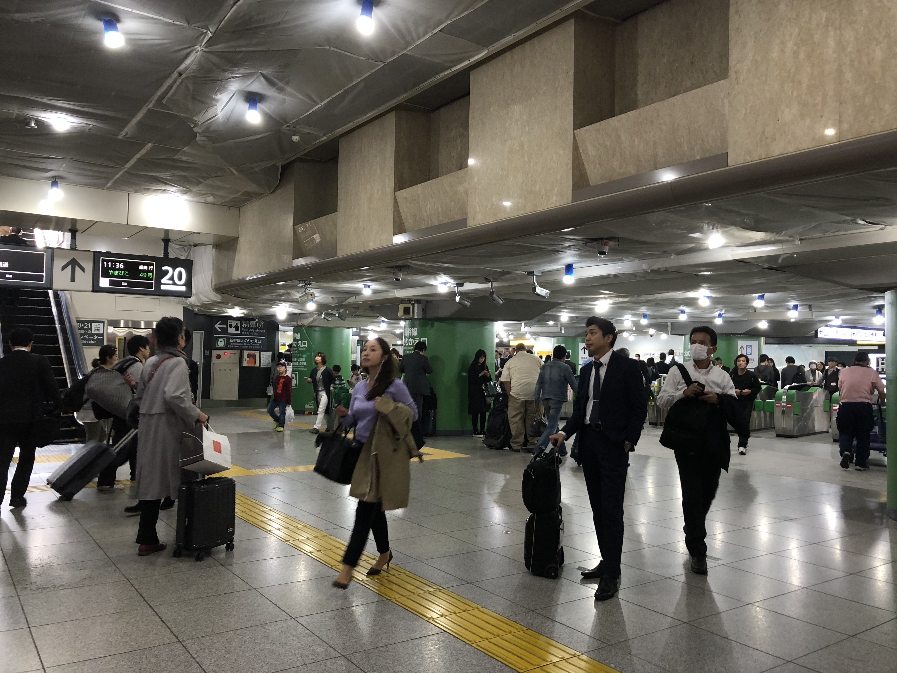
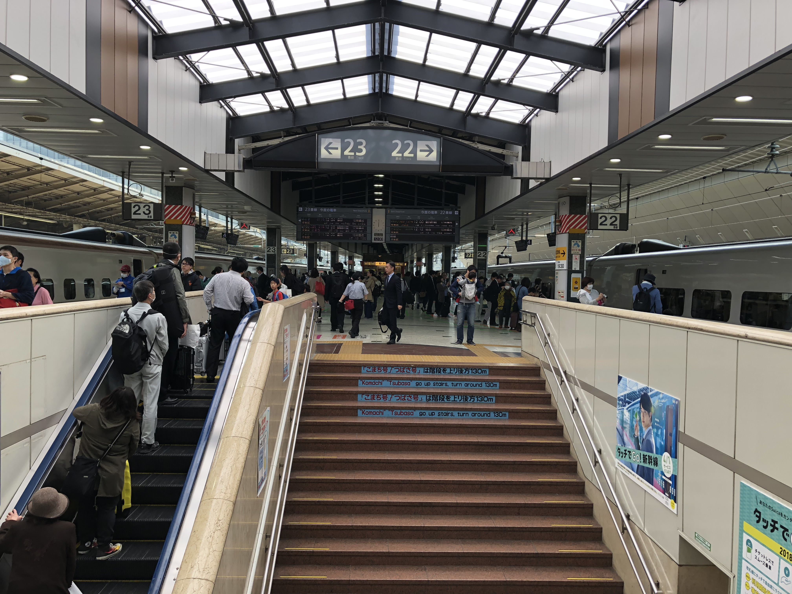

We had a class field trip to two countryside towns, Tomiya and Iwadeyama. Our first stop of the day was an antique store which, to be honest, looked like a junk shop. They sold simple traditional paintings on pieces of cardboard, a few pieces of interesting wicker and porcelain art, old coins, and for some reason, used stamps from foreign countries. I was much more interested in a wagashi shop near the antique store, and bought a couple sweets which were aesthetic pleasing but tasted like sugar paste.

I've always wanted to try this!!! It's beautiful, but in reality, just tastes sweet, with a texture like red bean paste.
The next stop of the day was an old sake brewery. It was spacious, dark and chilly inside. With rows of floor to roof vats, it looked industrial and even a little like a villain's lair. Sake producing season is in autumn, which means that it must be very chilly during production. The tour of the brewery culminated in sake tasting. However, I'm not a fan of alcohol, and I couldn't even choke down the first sample. They also allowed us to taste this brown, thick paste, which was apprently the dredges- the bottom of the barrel rice leftovers after draining the brewed sake. It was very, very strong and very, very... interesting. Our brave professor bought cartons of the stuff but it's not really a culinary experience I'm willing to try again!
We had a little bit of free time and my friends and I decided to climb the hill to get a view of the surrounding area. Though the view wasn't as comprehensive as I thought it would be, the forested parks leading up to the mountain were so lush and relaxing to walk through. After descending the hill we went to see the main street. However, it was very empty and not nearly as busy as thought it would be. Several of us wondered how these small town businesses survive considering how deserted the place is.
We visited an old samurai school called the Yubikan. There was a beautiful Japanese style building as well as a beautiful Japanese garden. Dark koi reside in the garden's pool, which you are able to feed by buying their special koi feed. I was also very surprised to see brightly colored koi swimming through the town's water ways! There are no fish in the creeks where I'm from, so the water is presumably very clean in order for their to be koi thriving in it.

My friend repping some miso-flavored ice cream. It was good! The taste was pretty normal to me, some of my classmates thought it tasted like coffee or salted caramel.
And that was my day! Later that night, I took a night bus to Tokyo... more on that later.